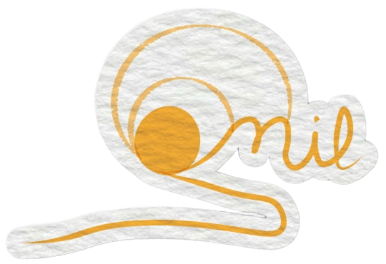
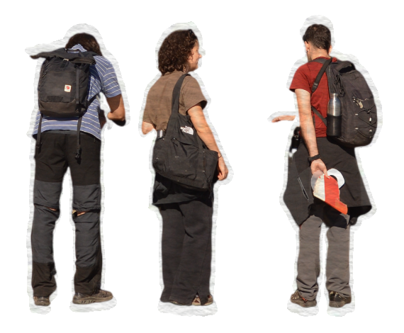

Escuchar
Prestar atención al paisaje, a sus cambios y a las personas que lo conocen.

Mil GuadarramasLa historia detrás del nombre
Una invitación a mirar de cerca, encontrarnos y cuidar el lugar que compartimos.

Paisaje que nos inspiraUna idea en movimiento
Mil Guadarramas y Miles Soles Vienen nace de una convicción sencilla: cuando nos acercamos al territorio y a quienes lo habitan, aparecen maneras nuevas de cuidarlo.
Somos una iniciativa abierta a la colaboración, al aprendizaje mutuo y a las ideas que ayudan a construir una relación más viva con nuestro entorno.
Lo que nos mueve
Prestar atención al paisaje, a sus cambios y a las personas que lo conocen.
Hacer espacio para encontrarnos, aprender y poner ideas en común.
Convertir el cariño por el territorio en acciones cotidianas y colectivas.
Los caminos compartidos
llegan más lejos.